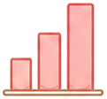

👶 赤ちゃん名前チェッカー
候補の赤ちゃんの名前について5つの質問に答えると、読みやすさ・画数バランス・人気度・印象などを総合診断します。
使い方はかんたん4ステップ
登録不要・約1〜2分で診断完了します
名前を入力
候補のお名前（漢字・ひらがな）と読み方を入力します

スコアを確認
読みやすさ・画数・人気度を総合スコアで判定します
詳細を見る
レーダーチャートと命名アドバイスで深掘りします
保存・共有
結果を保存・印刷・SNSで家族と共有できます
このツールでわかること
読みやすさ診断
初見で読めるか、読み間違いリスクを判定
画数バランス
姓名判断の視点で画数の良し悪しを確認
人気度・トレンド
定番〜珍しいまで人気度の傾向を可視化
意味・印象
名前に込めた印象・イメージを整理
こんな方におすすめ
出産を控えたご夫婦
出生届の前に名前を最終チェックしたい方に
名前を比較中の方
複数の候補をスコアで客観的に比べたい方に
読みやすさ重視の方
キラキラネームを避け安心の名付けをしたい方に
祖父母と相談中の方
家族みんなで納得して決めたいご家庭に
📖 使い方
- ページを開き、診断の説明を確認する
- スタートボタンをクリックして診断を開始する
- 表示される質問に順番に回答する（約1〜2分）
- すべて回答すると診断結果が自動表示される
- 結果のアドバイスを確認してSNSでシェアする
⚠️ 本ツールの結果は参考情報です。専門的判断は資格を持つ専門家にご相談ください。
📋 このツールの詳細
「赤ちゃん名前チェッカー」は、候補の名前の読みやすさ・画数・人気度を診断。命名の参考に。
赤ちゃん名前チェッカー — 名前の読み・画数・意味を確認
このツールでできること
候補の赤ちゃんの名前について、漢字の画数・読み方の難易度・名前の響き・同音異字の有無などを確認できるツールです。命名前のチェックリストとして活用することで、後から後悔しない名付けをサポートします。
名付けで確認すべきポイント
読み方が複数ある漢字は学校や職場で読み間違えられやすく、本人が苦労する場合があります。また名前の画数は姓名判断の観点で吉凶を確認するご家庭も多く、このツールで一括チェックが可能です。
名前と戸籍・法律の基礎知識
2023年の戸籍法改正により、出生届に読み仮名（ふりがな）が法的に必要となりました。使用できる漢字は法務省が定める「人名用漢字」に限られます。奇抜な当て字（キラキラネーム）は戸籍受理が拒否される場合があります。
🔗 このツールと一緒によく使われるツール
育児・子育て費用の基礎データ（2024〜2025年）
文部科学省・厚生労働省のデータをもとに、子育てにかかる費用と公的支援を整理しました。
| 項目 | データ | 出典 |
|---|---|---|
| 学校教育費（幼〜高校・公立のみ） | 約570万円 | 文部科学省「子供の学習費調査」2022年版 |
| 保育所の平均月額費用（認可・ゼロ歳児） | 約3〜6万円（所得に応じた応能負担） | 内閣府「子ども・子育て支援新制度」 |
| 児童手当の支給額 | 3歳未満：月15,000円 / 3歳〜中学生：月10,000円 | 内閣府「児童手当制度のご案内」 |
| 出産育児一時金 | 50万円（産科医療補償制度加入医療機関） | 厚生労働省「出産育児一時金」2023年4月〜 |
📖 あわせて読みたいコラム記事
⚠️ 計算結果の活用にあたって
よくある質問
- Q. 赤ちゃんの名前に使える漢字（人名用漢字）はどれですか？
- 赤ちゃんの名前（出生届）に使える漢字は「常用漢字2,136字」と「人名用漢字863字」の合計2,999字（2024年時点）です。ひらがな・カタカナはすべて使用可能です。一方で「難読すぎる漢字」「画数が非常に多い漢字」は使えても現実的には注意が必要です。名前の読み方に制限はありませんが、一般的な読み方から大きく外れると本人が生涯にわたって説明に苦労する可能性があります。
- Q. 赤ちゃんの名前を考える際の画数・姓名判断はどの程度参考にすべきですか？
- 姓名判断（画数による運勢・吉凶の判断）は「科学的な根拠はない」とされています。ただし「名前を考える際の一つの視点として活用する」という使い方は問題ありません。画数にこだわりすぎて「読みにくい字・書きにくい字」を選ぶより、本人が生涯使いやすく・呼ばれやすい名前を優先することが実用的です。「父親・母親の姓名判断への価値観」が異なる場合は、事前にすり合わせておくとスムーズです。
- Q. 名前のキラキラネーム・難読ネームは避けた方が良いですか？
- 「キラキラネーム（個性的すぎる読み方・表記）」の注意点として「読んでもらえず、訂正・説明が生涯続く可能性」「就職活動・ビジネスシーンで第一印象に影響するケースがある」「2023年法改正で命名ガイドラインが制定（読み方に一定の制限が設けられた）」があります。一方で「誰でも読めて・書けて・意味が良い名前」は本人にとって生涯のプラスになります。漢字・読み・意味の三拍子が揃った名前が、長く愛される傾向にあります。